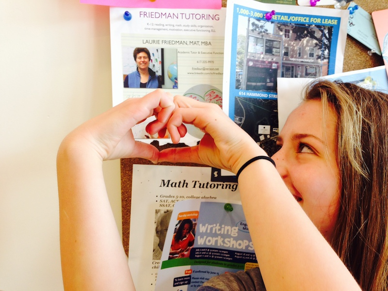

Friedman Tutoring
Student Testimonials
"Dear Mrs. Friedman: I want to thank you for everything that you have done for me over the past two years. We rarely meet people in our lives that have such an effect on the outcome of our lives. You are someone who has changed my life completely and for the better. I am now a much more successful student than I once was and I attribute that greatly to you and the help you have provided for me. I wish you the very best of luck in your future, and I hope to see you again after I graduate."
"Dear Mrs. Friedman, You have been a huge part of my life for almost two years now, helping me with homework, senior presentation, and even just being there to talk to. Thank you for being you."
"This year the faculty (yearbook) dedication goes to Mrs. Friedman. She has been described as 'a dedicated educator who always applies a student-centered approach to her work and thinking.' She is empathetic and is able to view situations from the student's point of view. Personally, I have worked with Mrs. Friedman for two years, and she has made a big difference in my grades and outlook on academic life and more. She is always available to talk, whether it is about grades, college or an outside issue that I am having. Mrs. Friedman is an enlightened character who brings out the best in her students and peers."
"Thanks for believing in me and for the love and encouragement."
Parent/Professional Testimonials
"Laurie supported our daughter, in helping her with strategies to support her learning challenges. Not only did she accomplish this, but our daughter formed a very trusting relationship with Laurie, which encouraged her to improve her performance at school. We are very thankful for Laurie for her interest and time which went well beyond the call of duty to help our daughter gain the skills necessary to succeed at school."
"Laurie worked with our son, as an effective learning coach and a trusted teacher. Laurie understood him and was able to guide him through his coursework tasks to his ability. She was helpful to us as well, explaining his learning style and needs in clear language. We appreciate her work!"
"Laurie is centered on the goal of promoting student success in everything that she does. She has command of the full range of academic subjects and can help to advance students’ writing skills in their English and history courses, can assist them with their math and science subjects and can teach them time management and organizational strategies to help them become independent in their studies."